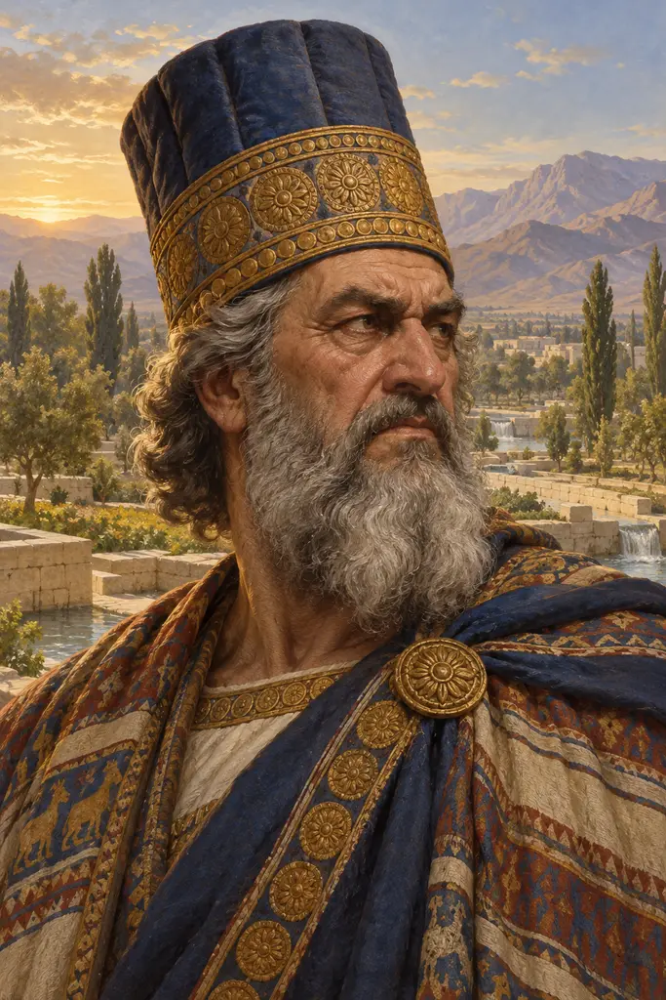
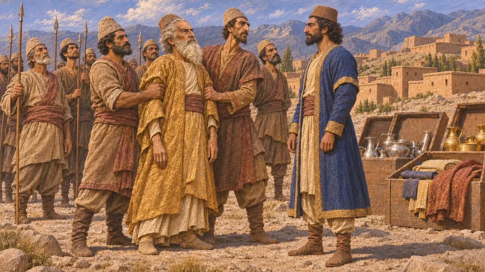
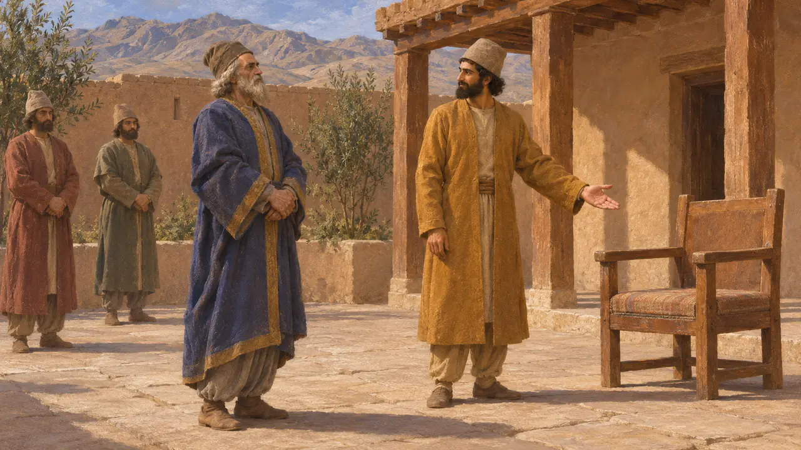
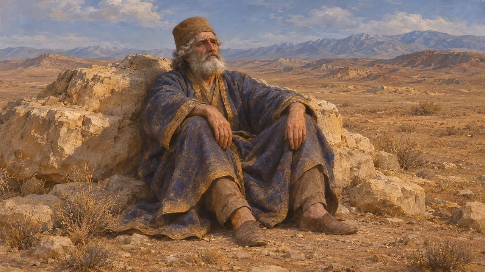
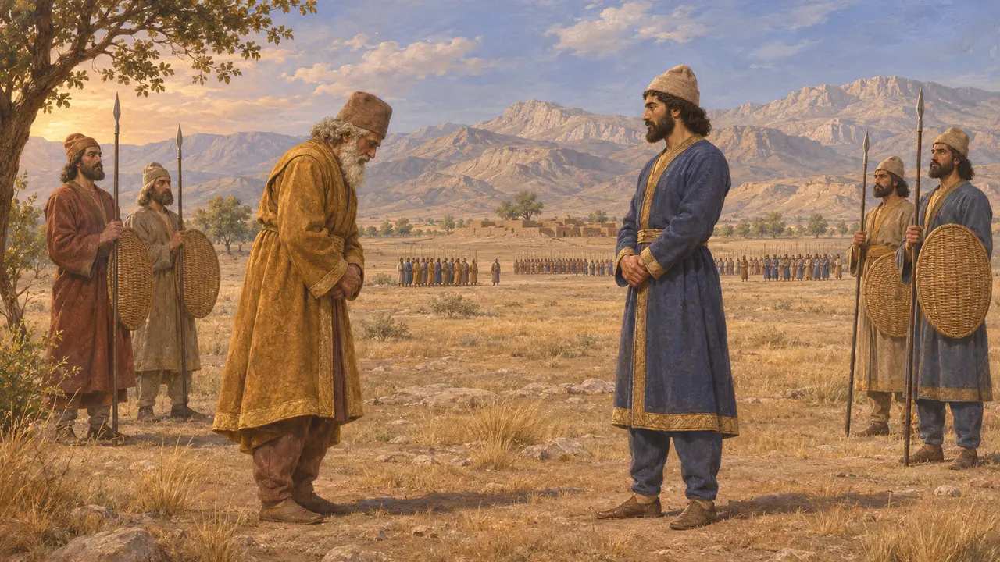

阿斯提阿格斯是米底人的末代国王，以埃克巴坦那为都，直到约公元前550年被波西斯的安善王居鲁士推翻。一部巴比伦编年史记载，他自己的军队倒戈，把他交给了居鲁士。这场倾覆使波斯人成为米底诸地的主人，也为征服吕底亚和巴比伦打开了道路。希罗多德称阿斯提阿格斯是居鲁士的外祖父，但克特西亚斯否认此说。
游戏中： 游戏仅在编年史中提及阿斯提阿格斯，称他为米底国王，其将领哈尔帕哥斯倒向了居鲁士。游戏称他为居鲁士的外祖父，仅凭希罗多德一家之言，而克特西亚斯否认这层关系。

巴比伦人对其败亡的记录
见于史载《那波尼德编年史》在那波尼德在位第六年（公元前550-前549年）条下称他为伊什图梅古，记载他出兵讨伐安善王居鲁士，但其军队倒戈，将他擒住交出。居鲁士随后从埃克巴坦那将白银、黄金和财物运回安善。那波尼德的西帕尔圆柱是一篇建筑铭文，同样讲述了居鲁士击溃米底大军、俘获其国王之事。
Nabonidus Chronicle (ABC 7), col. ii; Sippar Cylinder of Nabonidus; A. K. Grayson, Assyrian and Babylonian Chronicles, 1975

希罗多德论其统治与败亡
古代记述希罗多德称阿斯提阿格斯是库阿克撒列斯之子，统治米底人35年。他说米底贵族哈尔帕哥斯因一桩旧怨心怀愤恨，与米底贵族密谋，并怂恿居鲁士率波斯人起兵反叛。当阿斯提阿格斯派哈尔帕哥斯迎击波斯人时，米底大军多有倒戈或溃逃。希罗多德还说，居鲁士将这位老王留在宫中，未加伤害，直至其去世。
Herodotus 1.73-74, 1.123-130
梦兆与弃婴
后世传说希罗多德记载，阿斯提阿格斯梦见女儿曼达妮所生之子将取代他为王，于是下令杀死新生的居鲁士。哈尔帕哥斯将婴儿交给一名牧人，牧人之妻把他当作亲生骨肉抚养长大。男孩十岁时身份败露，阿斯提阿格斯为惩罚哈尔帕哥斯，竟在宴席上将他亲生儿子的肉端给他吃。这个故事沿袭了英雄出生即遭遗弃的古老模式，史家并不将其视为信史。
Herodotus 1.107-122

外祖父还是敌人
争夺中希罗多德和色诺芬都说居鲁士是阿斯提阿格斯之女曼达妮的儿子。约公元前400年在波斯宫廷行医的希腊人克特西亚斯则否认二者有任何血缘关系，称居鲁士是在战后才娶了阿斯提阿格斯之女阿米提斯。他还说阿斯提阿格斯后来被弃于荒漠之地，任其死去。居鲁士圆柱只称居鲁士的先祖为安善王，与米底的关联可能是后来才被宣扬出来的，以使他显得像是正统继承人。
Herodotus 1.107-108; Xenophon, Cyropaedia 1.2; Ctesias, Persica (epitome of Photius); Cyrus Cylinder

他的王国疆域
争夺中希腊作家描绘了一个强大的米底帝国，并称波斯人只是将其接管。米底王权的势力究竟延伸多远、组织程度如何，史家至今仍有争论。迄今未发现任何米底王室铭文或档案，因此可依据的几乎只有亚述和巴比伦文献以及希罗多德的记载。数百年后的斯特拉波写道，居鲁士之所以尊崇帕萨尔加德，是因为他在那里的决战中击败了阿斯提阿格斯。
H. Sancisi-Weerdenburg, Was there ever a Median empire?, 1988; Strabo 15.3.8
来源
- Herodotus 1.73-74, 1.107-130
- Nabonidus Chronicle (ABC 7) and Sippar Cylinder of Nabonidus; A. K. Grayson, Assyrian and Babylonian Chronicles, 1975
- Ctesias, Persica (epitome of Photius)
- Xenophon, Cyropaedia 1.2
- P. Briant, From Cyrus to Alexander, 2002
- H. Sancisi-Weerdenburg, Was there ever a Median empire?, 1988